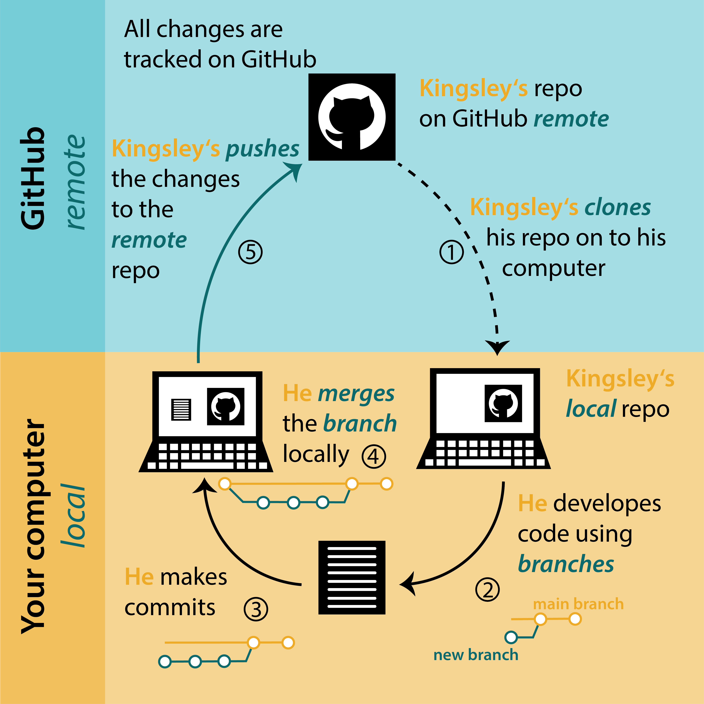

3 Working with branches
3.1 What is a branch?
A branch lets you develop code, fix a problem, or test an idea without affecting the original project. A branch is created from an existing branch, usually from the main branch of the project. Note that main branch was previously named master branch, but removed because of the reference to slavery. Because of this change you might find references to the old name when looking for help elsewhere.
You can work on a branch, bravely develop code that works or does not work and it does not break the code on the main branch. Basically, you can experiment on your own.
If the idea did not work or you have another idea, the branch can be deleted and nobody ever needs to know about it. Make a new branch and start all over again. None of this will affect the original project.
If you are working on your own project, and happy with the new code, or the idea is tested and working, you can merge the branch you are working on with the main branch.
TipDefinitions
- branch - a space for making changes to code without affecting the original code
- merge - merge the commits on two branches
- merge conflict - a problem when there are two incompatible versions of a file that you are trying to merge
- main - conventional name of the default branch of your repo
3.1.1 The workflow
To understand the workflow, let’s see how Kingsley is using branches (Figure 3.1).
Kingsley owns a GitHub repo. He clones the repo to his computer (1). To develop code, he creates a new branch (2) and makes commits (3). Then he merges the new branch with the main branch locally on his computer (4). Finally, he pushes these changes to his remote repo on GitHub (5). Kingsley then continue the workflow (2-5).

Let’s have a look how to create, use and delete branches.
3.1.2 Make a new branch in RStudio
In RStudio, click on the New Branch button in the Git tab. Next to this button it will say on which branch you are. In this case it is main, which is the default branch.

Give the branch a short and informative name (no spaces) and click Create.

You are now in the newly created branch.

If you want to switch back to the main branch or another branch, click again on the box in the top corner to switch. Note that you cannot switch to another branch if you have uncommitted changes. They need to be committed first.
gitGraph commit id: "a" commit id: "b" commit id: "c" branch feature checkout feature commit id: "d" commit id: "e" tag: "HEAD"
3.1.3 Code, commit and push to origin in RStudio
Now is the time to work in a new or edit an existing file on the project. You can work the way it is described in Section 2.7. Write or edit code, test it, commit regularly and add a useful commit message.
Once you are done with the task it is time to merge the work on your new branch into the main branch. You can do this either locally or on GitHub.
The easiest way to merge branches is on GitHub.
First, push your commits to GitHub and then open your repo on GitHub.
You should have a green button “Compare & pull request” (Figure 3.6). Click this.

Now you should see a page with the title “Open a pull request” (Figure 3.7). Click on the green create pull request button and follow the instructions on the next page to complete the pull request.

The final step is to switch to the main branch in RStudio (Figure 3.4) and pull the latest commits.
This process is similar to the workflow when collaborating with forks (Chapter 4).
You can also merge branches in RStudio using the terminal if you prefer.
First you need to go to the main branch. You can change to the main branch in RStudio (Figure 3.4), or, go to the Terminal and type:
git checkout mainTo merge the branch called community_analysis into the main branch type:
git merge community_analysisThe last step is to push these changes to GitHub. For this, go to the git tab in RStudio and push the green arrow.
gitGraph commit id: "a" commit id: "b" commit id: "c" branch feature checkout feature commit id: "d" commit id: "e" checkout main merge feature commit id: "f" tag: "HEAD"
3.1.4 Delete branches
Once you have created some branches, it will become difficult to track which branch you are still working on and which are old. Generally, you want to delete a branch when you are finished with it.
You can delete a branch on GitHub either as the last step of merging a branch, or by clicking on the “branches” button and then the dustbin icon next to the branch you want to get rid of.
To delete a branch locally, open the terminal and type:
git branch -d community_analysisTo save you from losing work, this command will not work if the branch has not been merged. If you really want to delete the branch, use this instead.
git branch -D community_analysis
NoteExercise
Make a new branch for your repo, then, on the branch edit your code and make some commits. Then merge the branch with the main branch and delete the new branch. Look at the git history to see how the branch and its commits are represented (open the git window in RStudio and click on history).
3.1.5 Trouble shooting
3.1.5.1 Check configurations in the Terminal
If the push and pull icons are in pale green, you might want to check the configurations of your repository. In the Terminal you can check the origin of your repo, which is from where you push and pull. And it will show you if your origin is wrong.
Go to the Terminal tab and type:
git remote -vThe output will look like this:
origin git@github.com:kingsleyshacklebolt/magic_dragons.git (pull)
origin git@github.com:kingsleyshacklebolt/magic_dragons.git (push)If this looks right, try running
git pulland following the instructions in any error message.
NoteFurther reading
Happy Git provides instructions for how to getting started with Git, R and RStudio, explains the workflow and useful tips for when things go wrong.
Pro Git Book chapter on basic branching and merging. Note that this book is competent user level with command line focus.
The Git flight rules are an exhaustive resource for what to do when things go wrong.
NoteWhat’s next
For collaborating with others on the same project read the chapter on Collaborating with forks